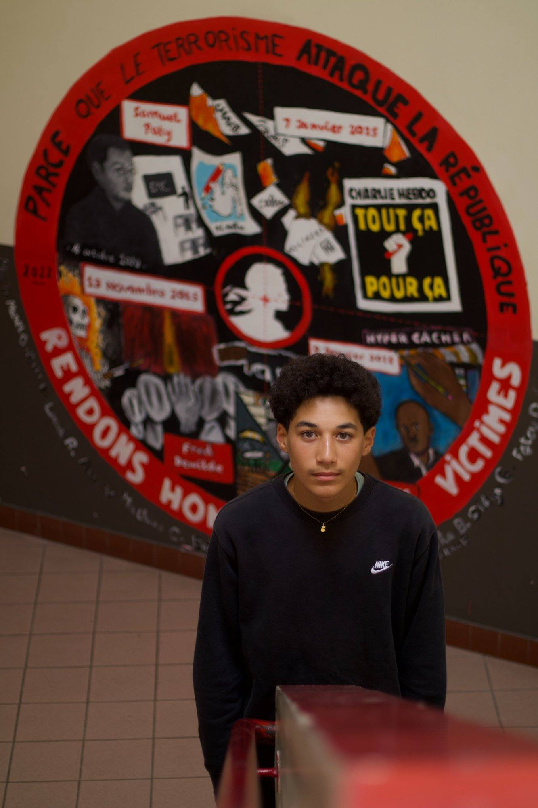
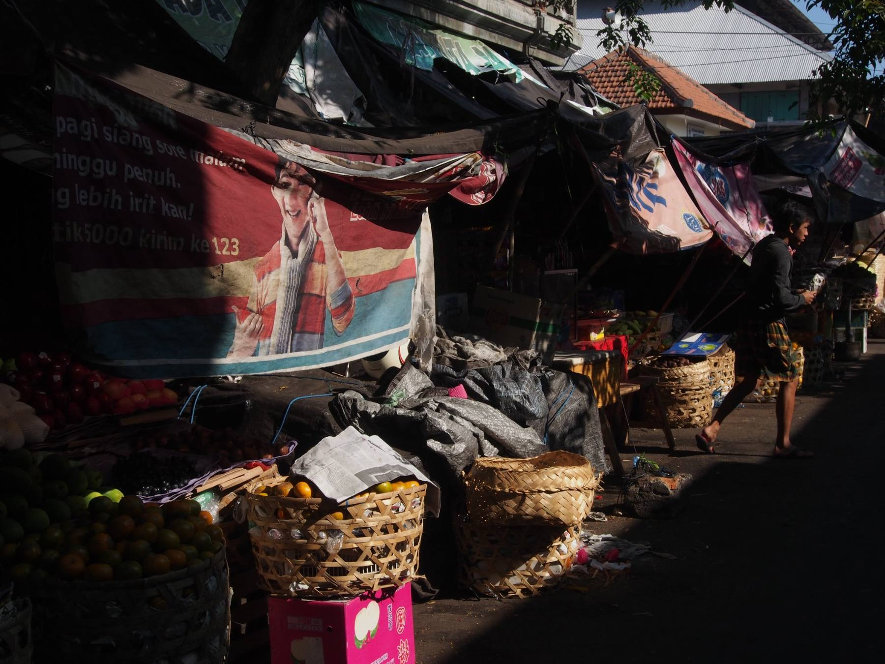
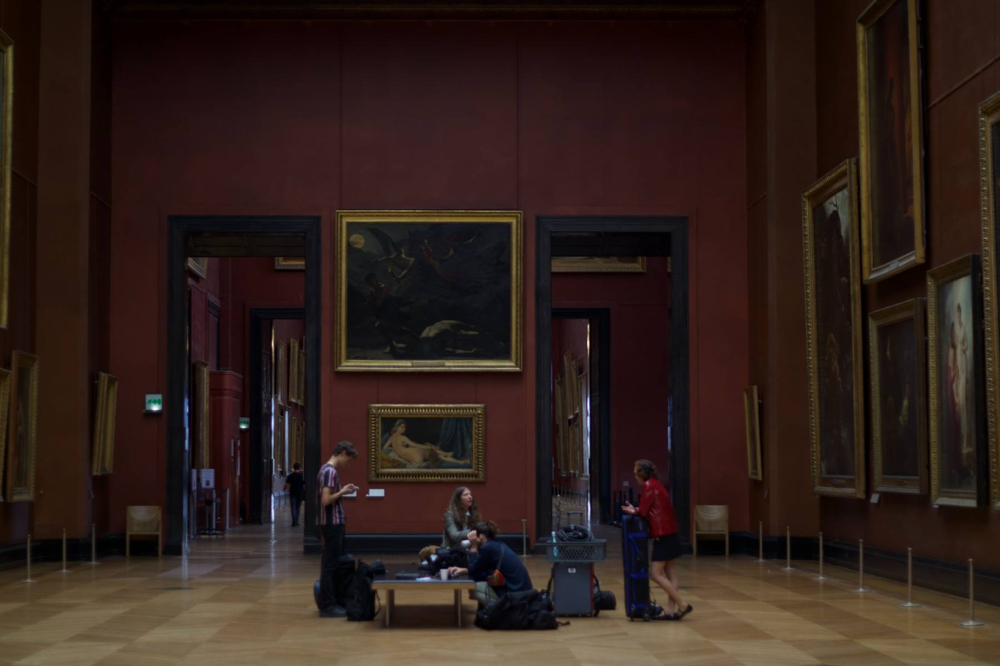
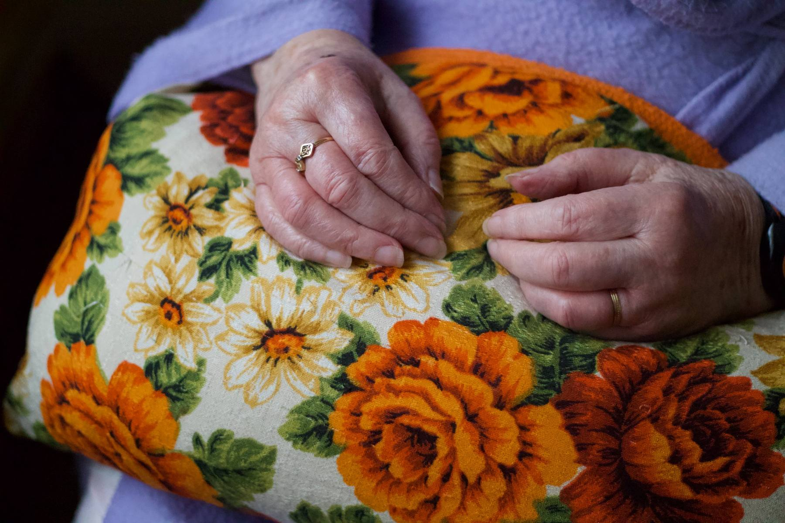
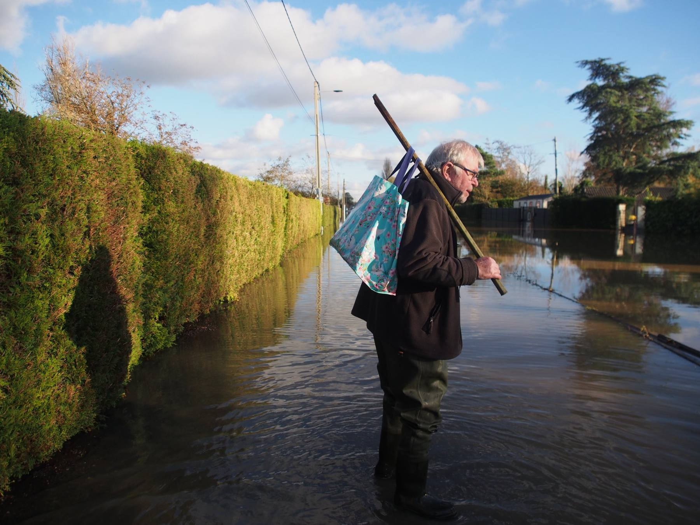
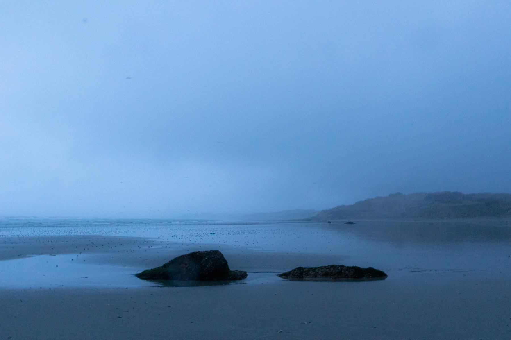
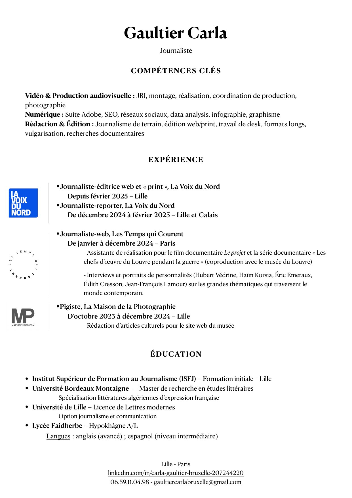

Journaliste · Reporter d'Images
Journaliste JRI polyvalente — du terrain à l'édition. Je raconte des histoires qui comptent, en image, en texte et en chiffres, avec la rigueur du fond et l'instinct du direct.
Reportage radio
Lille — les voix du second tour
Réalisé le dimanche 22 mars 2026 à Lille · Municipales 2026, second tour
Assistante de production sur :






Journaliste-éditrice web & print — La Voix du Nord
Lille
Journaliste-reporter — La Voix du Nord
Lille et Calais
Journaliste web — Les Temps Qui Courent
Assistante de réalisation · Interviews · Coproduction Louvre · Paris
Pigiste — La Maison de la Photographie
Articles culturels · Lille
ISFJ Lille · Master Bordeaux Montaigne · Licence Lettres Lille
Journalisme · Littératures algériennes d'expression française · Hypokhâgne Faidherbe
Travaillons
ensemble.
Curriculum vitæ
